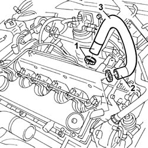

1080D10 OIL VAPOUR PIPES FROM INTAKE TO SEPARATOR - R.R.
- Path
- Procedures > 10 ENGINE > 1080 EMISSION CONTROL SYSTEM > 1080D CRANKCASE VAPOUR/GAS RECIRCULATION SYSTEM > 1080D10 OIL VAPOUR PIPES FROM INTAKE TO SEPARATOR - R.R.
- Kind
- repair procedure (removal / refitting; the operation number is the code)
- Applies to
- engines: 2.4 JTD 10V; all production periods
- Interactive page
- https://sloeber94.github.io/elrnDB-lThss/en/#/103546
Applies to: all engines; all production periods
 Removing
Removing
 Refitting
RefittingSee in Op. 1016A10
1. Disconnect the pipe from the housing in the crankcase.
2. Disconnect the pipe from the tappet cover.
3. Remove the engine oil vapour pipe.

Applies to: all engines; all production periods
Refitting
Removing- Fit the oil vapour ipe on the connectors on the crankcase and the tappet cover.
- Fasten the ends using the bands.
See in Op. 1016A10